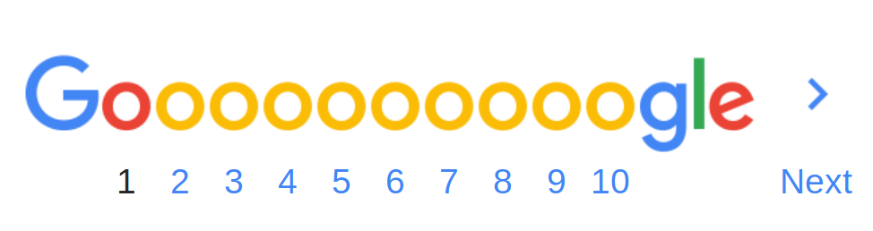

About 135,000,000 results (0.49 seconds)
How to build your own website | It's easy with Wix.com
Ad www.wix.com/
Just Choose the Template You Love & Customize It.
No Design Code Skills Needed. Social media compatible.
Easy-to-add blog. Mobile optimized. SEO wizard. Market leaders.
build this webpage - Github Pages
https://christine-27.github.io/google-homepage/
TO CREATE A WEBSITE WITH WORDPRESS (OR JOOMLA &
DRUPAL), USE ONE CLICK INSTALLATION: Log in to your hosting
account. Go to your control panel. Look for the “WordPress”
or “Website” icon. Choose the domain where you want to install
your website.
build this webpage - Github Pages
https://victor-lf.github.io/google-search-results/
With zero coding experience, artist building
180 webpages in 180 days ... build this webpage - Google Search
https://aryavansh.github.io/googleresults.
With zero coding experience, artist building 180 webpages in 180 days
blog.jenniferdewalt.com/post/.../im-learning-to-code-by-building-180-websites-in
Jul 24, 2013 - I'm learning to code by building 180 websites in
180 days. Today is day 115. A little over 4 months ago, I decided I was going
to learn to code.
Learning to Code By Building A Website a Day - Jennifer Dewalt
blog.jenniferdewalt.com/post/.../im-learning-to-code-by-building-180-websites-in
Jul 24, 2013 - I'm learning to code by building 180
websites in 180 days. Today is day 115. A little over 4 months ago,
I decided I was going to learn to code.
How to Create a Website: Step-by-Step Guide for Beginners (2019)
https://websitesetup.org/
Apr 25, 2019 - Learn how to make a website and set it
up. This site contains different tutorials on how to build a website
using WordPress, Joomla, Drupal ...
How to Build a Website in a Day - Chicago Web Design - BuildThis
https://buildthis.com/our-digital-services/one-day-website/
Jul 26, 2019 - Need a website completed really fast?
How does one day sound? BuildThis Today is a program that gets your
website finished before the end ...
Related search
Top website builder software
- Wordpress
- Weebly
- Shopify
- Webnode
